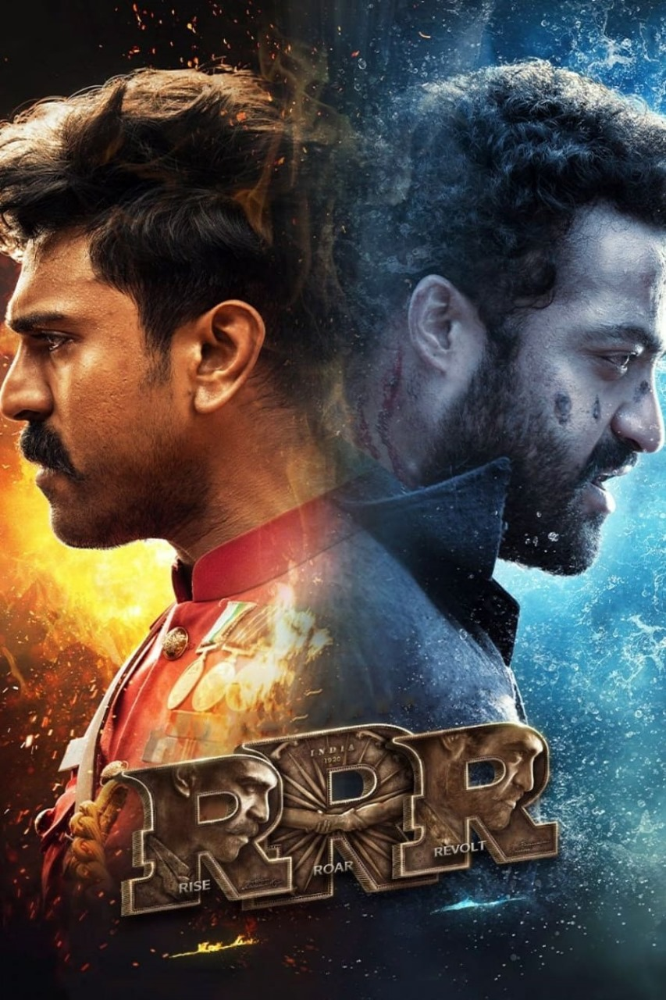
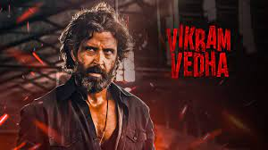
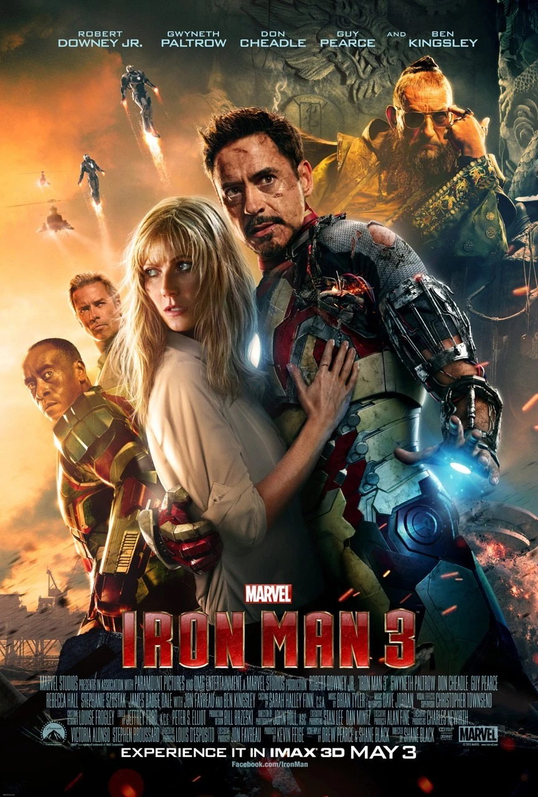
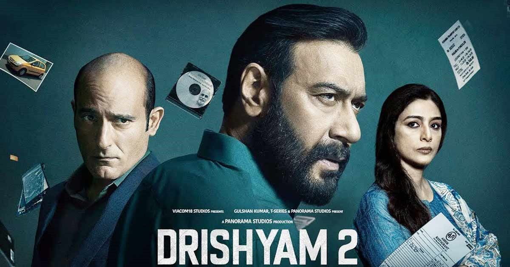
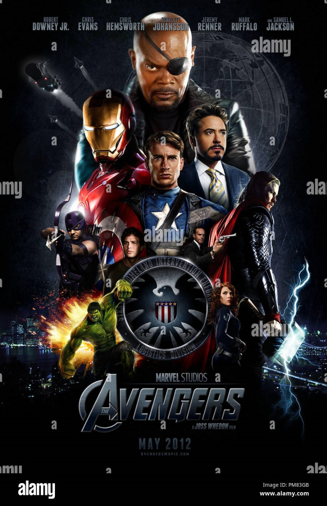

My 5 Favourit Movies
My 5 Favourit Movies
RRR

RRR
Directed by : S. S. Rajamouli
About : RRR is an entirely fictitious story incorporating the lives of two real-life Indian revolutionaries, namely Alluri Sitarama Raju and Komaram Bheem, who fought against the British Raj and the Nizam of Hyderabad respectively. Charan plays Rama Raju while Rama Rao plays Komaram Bheem.
VIKRAM VEDHA

Vikram vedha
Directed by : Gayatri & Pushkar
About : Vikram, an honest police officer, aims to put an end to Vedha, a dreaded gangster. Following the baseline of a famous Indian folktale, the duo swaps stories and riddles rather than bullets and knives. Tune in to watch the surprising twists and turns!
IRON MAN

IRON MAN
Directed by : Jon Favreau
About : Iron Man is the superhero persona of Anthony Edward "Tony" Stark, a businessman and engineer who runs the company Stark Industries. Beginning his career as a weapons manufacturer, he is captured in a war zone, and his heart is severely injured by shrapnel.
DRISHYAM 2

Drishyam 2
Directed by : Abhishek Pathak
About : On the night of 3 October 2014, a man named David Braganza flees from authorities after committing a murder. While hiding behind an under construction site, he witnesses Vijay Salgaonkar (Ajay Devgn) emerging from it. David later tries to escape with his wife and son but ends up getting arrested.
AVENGERS

Avengers
Directed by : Joss Whedon
About : The Avengers follows Nick Fury and the spy agency S. H. I. E. L. D. recruiting Tony Stark, Steve Rogers, Bruce Banner, Thor, Natasha Romanoff and Clint Barton to form a team capable of stopping Thor's brother Loki from subjugating Earth.